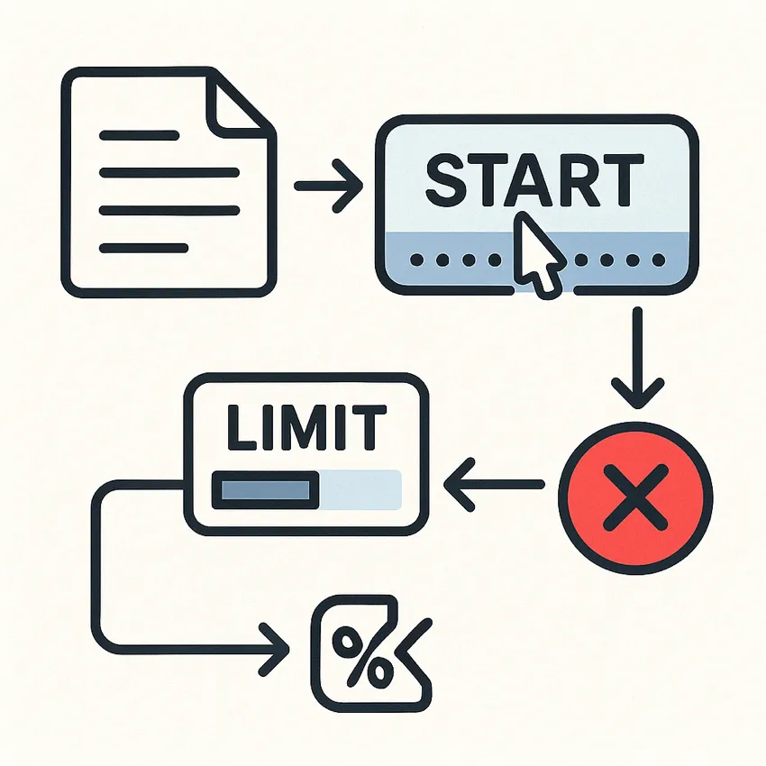

LINE Messaging Community 節點範本
接收 LINE Bot Webhook 事件（訊息、postback）,使用 Switch 節點依據事件類型進行分流處理,message 事件會自動觸發回覆訊息,支援 postback 事件處理（按鈕互動）,手動觸發模式可主動推播訊息給特定使用者,使用 Set 節點設定目標使用者的 LINE UID,支援單一使用者精準推播功能,包含完整的 LINE Messaging API 整合範例
LINE聊天機器人自動回覆
OpenAI Sora-2 文字轉影片自動生成

接收文字提示詞，透過 OpenAI Sora-2 API 發起影片生成請求,自動輪詢檢查影片生成狀態（queued/in_progress/completed）,使用 Wait 節點實現智能等待機制，避免頻繁查詢,當影片生成完成後，自動下載影片內容,將影片上傳到指定的 Google Drive 資料夾,支援 720x1280 和 1280x720 等不同解析度,可選擇 4、8 或 12 秒的影片長度,包含詳細的 Sora API 定價說明和參數選項
AI影片生成OpenAISora自動化Google Drive文字轉影片
n8n DataTables 完整功能示範

使用 Form Trigger 建立互動式表單收集用戶評價資料,表單包含 email（文字）、評分（數字）、訂閱選擇（單選）、生日（日期）四種資料類型,Insert 操作：將表單提交的資料自動寫入 DataTables,Get Row(s) 操作：使用 ilike 條件搜尋包含特定文字的資料,If Row Exists 操作：純判斷資料是否存在，不回傳資料內容,If Row Does Not Exist 操作：判斷資料不存在時的處理邏輯,Update 操作：更新現有資料的特定欄位（如評分）,Upsert 操作：智能判斷資料存在則更新，不存在則新增,Delete 操作：根據 email 條件刪除指定的測試資料,包含完整的 Sticky Note 說明每個操作的用途和注意事項
DataTables表單收集CRUD 操作資料管理n8n 教學
Google nano banana 替換圖片

使用 Google Drive Trigger 監控指定資料夾的檔案變更,透過 Filter 節點篩選符合條件的圖片檔案格式,使用 Google Drive Download 節點下載觸發的原始圖片,設定 AI Agent 節點進行圖片內容替換處理,配置 Google Gemini Chat Model 節點使用 gemini-2.5-flash-image-preview 模型,設定圖片生成提示詞：「一個男人在凱旋門拿著原本的產品，產生圖片給我」,使用 Convert to File 節點將 AI 生成結果轉換為檔案格式,透過 Google Drive Upload 節點將處理完成的圖片儲存到輸出資料夾,自動命名檔案：使用時間戳記格式「yyyyMMdd_HHmmss.副檔名」,完整自動化流程：從上傳到處理到儲存全程無需人工介入
Google DriveAI 圖片生成Google Gemini
房屋資訊爬蟲到 Google Sheet
透過手動觸發器啟動房屋資訊爬蟲流程,使用 HTTP Request 節點請求房屋網站資料,透過 HTML 節點解析房屋列表，提取每筆房屋的 HTML 結構,使用 Split Out 節點將房屋列表分離成個別的房屋項目,透過詳細的 HTML 解析提取房屋標題、社區名稱、地址等資訊,提取建物坪數、主陽台坪數、房間格局、樓層資訊等詳細規格,收集建築年份、建築類型、停車資訊、物件特色等附加資訊,抓取關注人數、價格、價格單位、價格備註等市場資訊,使用 Set 節點整理資料並新增資料來源標記,透過 Google Sheets 節點將所有資料自動儲存到指定試算表
網頁爬蟲房屋資訊HTML解析Google Sheets資料收集自動化不動產
Apify 撈 Youtube 影片資訊 Demo
透過手動觸發啟動 Apify YouTube 搜尋爬蟲任務,執行指定的 Apify Actor 進行資料爬取,使用 Get run 節點檢索任務執行狀態和基本資訊,透過 If 節點判斷任務是否成功完成 (status !== SUCCEEDED),任務未完成時使用 Wait 節點等待 3 秒後重新檢查,任務完成後從對應的 Dataset 中提取所有爬蟲結果,支援自訂爬蟲參數（搜尋關鍵字、結果數量等）
網頁爬蟲ApifyYouTube資料收集自動化API整合資料提取
表單名單蒐集與自動化郵件發送

部署美觀的表單收集介面，包含 email 和 name 必填欄位,表單提交後自動將資料寫入 Google Sheets，包含填寫時間和活動標籤,使用 Filter 節點篩選尚未發送郵件的聯絡人,透過 Gmail 節點批量發送個人化郵件,發送後自動更新 Google Sheets 中的發送狀態為 true,支援不同活動 campaign 的分類管理
表單名單蒐集郵件行銷Google SheetsGmail自動化活動報名
Gmail 電商取貨提醒自動化
監聽 Gmail 中包含「送貨狀態 更新為: 已到達」的電商到店信件,監聽 Gmail 中包含「賣貨便：您的訂單 已送達」的賣貨便通知,使用正規表達式解析信件內容，提取門市名稱,在 Google Calendar 中建立當日晚上 8 點的取貨提醒事件,設定彈出提醒（20 分鐘前和 40 分鐘前）,自動同步到個人 Google 行事曆，跨裝置提醒
自動化GmailGoogle Calendar電商取貨提醒生活助手通知解析
AI 選 AI 模型

接收使用者的聊天輸入並分析請求內容,使用專業的模型路由器分析請求的複雜度和需求,根據輸入長度、任務類型和複雜度選擇最適合的模型,支援 gpt-4.1-nano（簡單查詢）、gpt-4o-mini（基礎對話）、gpt-4.1-mini（專業內容）、o3（複雜推理）、gpt-4.1（高精度任務）,使用結構化輸出解析器確保回傳格式正確,透過模型選擇器將請求路由到對應的 AI 模型,提供完整的成本效益分析和模型使用建議
自動化AI模型選擇OpenAI路由器成本優化聊天機器人
Portaly 商品銷售 Webhook 自動記錄
接收來自 Portaly 平台的商品銷售 Webhook 通知,提取並整理固定欄位資料：訂單ID、產品ID、客戶資訊、金額、折扣等,使用 Split Out 節點處理客戶自訂欄位資料,透過 Code 節點將自訂欄位轉換為易讀格式,使用 Merge 節點整合所有資料,自動將完整訂單資訊儲存到 Google Sheets,支援 appendOrUpdate 模式，避免重複記錄,包含 Google Sheets 模板連結，方便快速設定
自動化WebhookPortalyGoogle Sheets訂單記錄
Meta Webhook Challenge 驗證回應

接收來自 Meta 平台的 Webhook 驗證請求,從查詢參數中提取 hub.challenge 值,使用 Respond to Webhook 節點回傳挑戰值,完成 Meta Webhook 驗證程序,支援 Facebook 和 Instagram API 整合,提供簡潔的兩節點解決方案
自動化MetaFacebookInstagramWebhook驗證API
n8n Evaluations 功能示範：AI 項目分類
使用 n8n Evaluation Trigger 從 Google Sheets 讀取測試資料,透過 AI Agent 使用 OpenRouter Gemma 模型進行項目分類,系統提示詞設計確保只回答「動物」或「水果」,使用 Evaluation 節點將結果寫回 Google Sheets,支援批量測試和準確度統計,提供完整的 AI 模型評估流程範例
自動化AI評估分類Google SheetsOpenRouter測試範例
Gmail 電子發票轉存 Google Sheet + AI 分析消費

每月定時監控財政部電子發票整合服務平台郵件,自動辨識並提取郵件附件中的發票資料,智能區分「發票主資料(M)」和「商品明細(D)」,將發票主資料存入「發票」工作表（載具資訊、發票資訊、商店資訊等）,將商品明細存入「細項」工作表（發票號碼、品項名稱、價格等）,使用 xAI Grok 模型分析消費模式與趨勢,生成包含摘要、類別統計、Top 5 店家和消費矩陣的詳細報告,自動將分析結果發送到 Slack 頻道，方便隨時查看
自動化發票記帳GmailGoogle SheetsAI消費分析Slack
ChatGPT Image-1 圖像生成與自動儲存
接收使用者的文字提示透過 ChatGPT 聊天介面,使用 OpenAI GPT-Image-1 模型生成多張圖片,自動將圖片存儲到 Google Drive 指定資料夾,在 Google Sheets 記錄圖片生成歷史和連結,自動計算並追蹤 token 使用量和成本,支援圖片縮圖預覽功能
自動化AI圖像生成OpenAIGoogle DriveGoogle Sheets
Line 收據AI辨識自動記帳

透過 Line 接收圖片或直接輸入資訊,使用 OpenAI 辨識日文收據上的關鍵資訊,自動提取品項、金額、店家和日期資訊,提供單人記帳和多人拆帳選項,自動儲存所有交易記錄到 Google 試算表,支援重試機制，處理辨識錯誤情況
自動化AI記帳拆帳Line收據辨識Google Sheets
Slack自動喝水提醒
使用OpenAI生成專業中醫風格的喝水提醒訊息,每小時隨機時間自動發送Slack提醒,提供多種容量選項按鈕記錄喝水量,視覺化顯示每日喝水進度（水滴進度條）,自動記錄喝水時間和容量到Google Sheets,提供iOS捷徑連結自動同步到健康App,智能避免短時間重複提醒功能
自動化健康Slack喝水提醒OpenAIGoogle SheetsiOS捷徑
Line Message API 完整教學範例

接收來自 Line 的 Webhook 訊息,條件判斷：僅處理 message 類型事件,使用 replyToken 自動回覆相同內容給使用者,支援主動推送訊息功能（需要 Line UID）,完整的 Webhook 範例說明：文字、圖片、聲音、貼圖、表情符號、位置,使用 HTTP Request 節點與 Line Messaging API 整合,包含詳細的 JSON 格式範例和參數說明
自動化Line訊息機器人WebhookAPI教學範例多媒體訊息
別忘記繳費:信用卡帳單自動建日曆提醒

自動Email中的帳單資訊,解析 PDF 檔案並提取繳費資訊,同步到 Google Calendar 建立提醒事項,記錄到 Google Sheets 進行追蹤,提供便捷的繳費狀態更新機制
自動化信用卡帳單管理GmailGoogle CalendarGoogle Sheets
While True 迴圈範例：分頁資料處理

展示 n8n 中實現 while 迴圈的方法,模擬分頁 API 資料處理流程,提供可自訂的參數設定,使用條件判斷控制迴圈執行,適用於需要處理大量分頁資料的情境
自動化迴圈分頁API教學範例